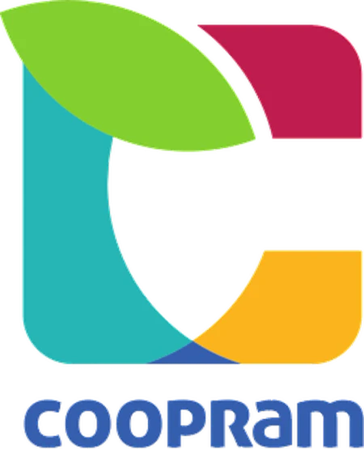
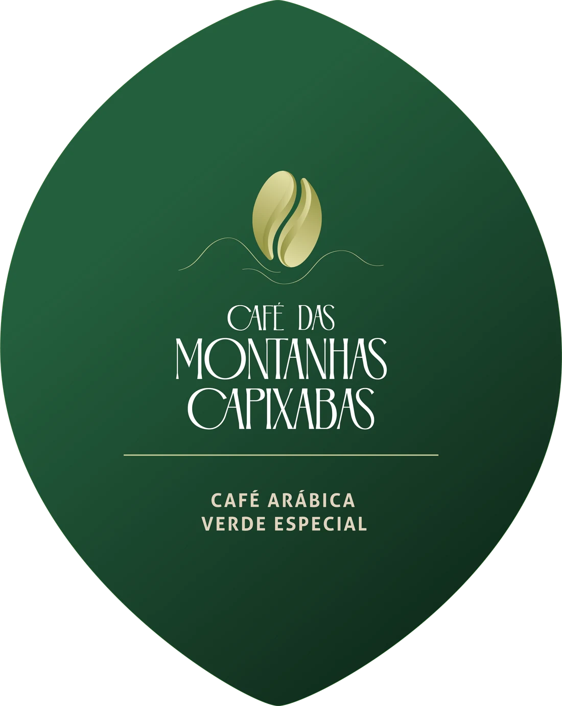

Estrutura para agregar valor
Mais do que ampliar a capacidade de beneficiamento, essa iniciativa ajudou a criar condições para que os produtores pudessem agregar valor à sua produção, aprimorar processos e se organizar coletivamente.

Cooperativa dos Empreendedores Rurais
Domingos Martins, Espírito Santo
Café Arábica Verde Especial
Das montanhas do estado do Espírito Santo para o mundo.
Das montanhas do Espírito Santo para o mundo.
Montanhas Capixabas
Nas montanhas de Domingos Martins, o café faz parte da história de muitas famílias.
Onde tudo começa
O relevo, a altitude e o clima da região criam condições favoráveis à produção de café, enquanto a agricultura familiar mantém vivo um conhecimento construído ao longo de gerações.
É nesse território que nasce o café Arábica da COOPRAM.
Uma história que atravessa gerações
As famílias produtoras da região têm origem alemã e pomerana e chegaram ao território entre 1860 e 1900.
As propriedades recebidas naquela época continuam atravessando gerações. Algumas delas estão hoje na sexta geração da mesma família.
Ao longo desse tempo, o cultivo do café foi acompanhado pelo aprendizado contínuo: conhecer a terra, selecionar variedades, aprimorar processos e buscar cada vez mais qualidade.
O que passa de geração em geração não é apenas a terra. É o conhecimento para cultivá-la.
Quando a produção ganha estrutura
A produção de café na região foi construída ao longo de gerações. Mas, para que esse conhecimento pudesse ganhar escala e alcançar novos mercados, também foi necessário fortalecer a estrutura dos produtores. Em 2001, um projeto apoiado pela ong alemã Lateinamerika-Zentrum e.V. (LAZ) contribuiu para esse processo, com investimentos em equipamentos para recebimento, processamento e armazenagem do café, além da construção de galpões e apoio técnico.
Mais do que ampliar a capacidade de beneficiamento, essa iniciativa ajudou a criar condições para que os produtores pudessem agregar valor à sua produção, aprimorar processos e se organizar coletivamente.
Foi um passo importante para aprimorar a estrutura de beneficiamento e criar melhores condições para o desenvolvimento da produção de café na região.
Fundada em 2007, em Ponto Alto, Domingos Martins (ES), a COOPRAM surgiu para fortalecer a organização dos produtores rurais e a comercialização da produção da agricultura familiar.
Hoje, a cooperativa conecta famílias produtoras, conhecimento, estrutura e novos mercados.
O que começou com o cultivo de cada família ganhou força quando passou a ser construído em conjunto.
Café e preservação
A produção das famílias acontece em harmonia com a preservação ambiental. Nas Montanhas Capixabas, produção e preservação caminham juntas.
As propriedades contam com áreas de preservação e seguem a legislação ambiental, contribuindo para a conservação de uma das regiões com maior área preservada do Espírito Santo.
O cuidado com o solo, a natureza e os recursos naturais faz parte da relação das famílias com a terra.

O produto
O café Arábica da COOPRAM reúne as características do território onde é cultivado e o cuidado das famílias produtoras em cada etapa da produção.
Entre 800 e 1.200 metros de altitude, as condições das Montanhas Capixabas, a tradição cafeeira e o manejo cuidadoso contribuem para um café de perfil equilibrado.
Café das Montanhas Capixabas
Um café de origem definida, produzido por famílias e preparado para mercados que valorizam qualidade, identidade e rastreabilidade.
Perfil sensorial
Doçura que contribui para o equilíbrio e a personalidade da bebida.
Características aromáticas que revelam a identidade do café.
Brilhante e integrada ao perfil da xícara.
Estrutura equilibrada e agradável.
Uma experiência delicada e persistente.
Do campo ao lote
A tradição do cultivo é acompanhada pelo aprimoramento contínuo dos processos.
As famílias produtoras conhecem profundamente a terra, as variedades e as práticas necessárias para preservar o solo e alcançar qualidade.
Depois da produção, o café passa por processos de classificação, beneficiamento e armazenamento adequado, com equipamentos preparados para seu manuseio.
Cada etapa contribui para preservar aquilo que começa no campo.
Rastreabilidade
A COOPRAM trabalha com um processo controlado de rastreabilidade, desde a compra até a entrega.
Um sistema desenvolvido para essa finalidade permite acompanhar o produto e garantir maior segurança sobre sua origem e trajetória.
Ficha técnica
A força por trás do café
Cada família produz, a cooperação conecta. A COOPRAM reúne mais de 500 cooperados e transforma a força da agricultura familiar em uma estrutura organizada de produção e comercialização.
Por meio da cooperação, a produção das famílias ganha organização, estrutura e acesso a novos mercados.
A cooperativa fortalece processos, reúne produtores e cria condições para que produtos de origem familiar possam alcançar mercados cada vez mais exigentes.
Exportação
A participação da COOPRAM no Programa ApexBrasil marca uma nova etapa na trajetória da cooperativa e fortalece sua preparação para o mercado internacional.
Essa iniciativa amplia as oportunidades de conexão com compradores, importadores, torrefadores e parceiros comerciais, aproximando a produção das famílias cooperadas de novos mercados.
Mais do que exportar um produto, a COOPRAM busca levar ao mercado internacional um café com origem, história, qualidade e rastreabilidade.
Contato
Nossa equipe está pronta para apresentar os cafés da COOPRAM, compartilhar informações sobre lotes, amostras, especificações técnicas e condições comerciais.
Entre em contato e conheça as possibilidades de fornecimento para o seu mercado.
Fale com nossa equipeCafé das Montanhas Capixabas
Um café Arábica de altitude, produzido por famílias, com origem, história e rastreabilidade.
Fale com nossa equipe comercial